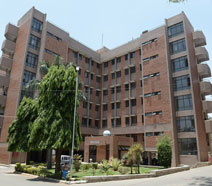
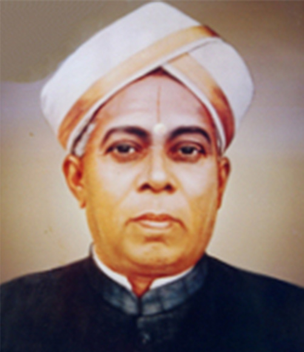
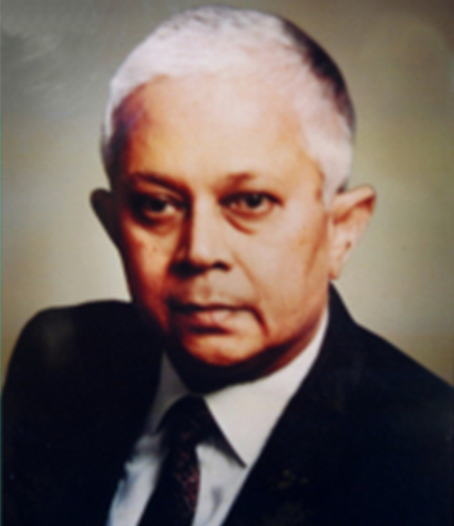

About BMSCE
Vision
Promoting Prosperity of mankind by augmenting human resource capital through quality Technical Education & Training.
Mission
Accomplish Excellence in the field of Technical Education through Education, Research and Service needs of Society.
Our History
B.M.S. College of Engineering (BMSCE) Bengaluru holds the distinction of being the first private engineering college in India, established in 1946 by founders Late Sri. B. M. Sreenivasaiah and his son Late Sri. B. S. Narayan. Over 77 years, the institution has produced more than 40,000 graduates who contribute globally as engineers and leaders.
Affiliated with Visvesvaraya Technological University (VTU) and aided by the Government of Karnataka, BMSCE became autonomous in 2008. The college is accredited with a NAAC A++ grade (CGPA 3.83) and holds NBA accreditation for all UG and PG programs. It is recognized as a leader in innovation and research, housing 14 research centers and consistently ranking among the top engineering colleges in India.
Our Visionaries

Late Sri. B.M.Sreenivasaiah
Founder B.M.S. Educational Trust
In the history of Karnataka, the name of Late Businayana Mukundadas Sreenivasaiah (BMS) occupies a prominent place in the field of Philanthropy. The Maharaja of Mysore honored him with the title of Raja Karya Prasaktha in 1946. He started the B.M.S. College of Engineering in the same year. He had forseen the urgent need for high quality technical education in India, even before independence. The ideals for which Sri. B. M. Sreenivasaiah stood, continued to inspire the inheritors of his legacy.

Late Sri. B. S. Narayan
Donor Trustee B.M.S. Educational Trust
After the demise of "Sri. B.M.Sreenivasaiah", his dynamic and enterprising son Sri. B. S. Narayan, took over the reigns of the college. The institution grew from strength-to-strength under his able guidance. He was also instrumental in initiating international collaborative programmes such as training foreign students under International Co-operation Division (ICD) and cross cultural programs with Melton Foundation.